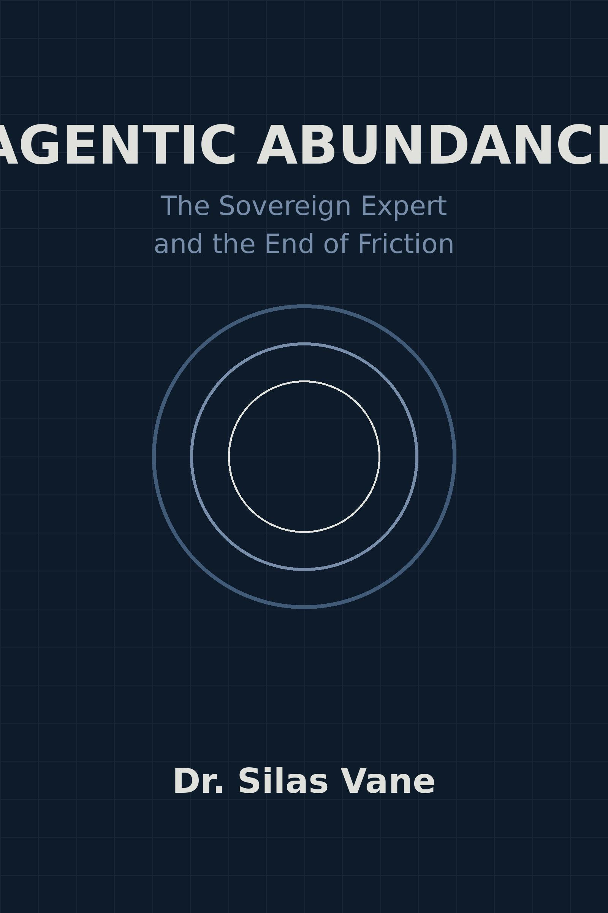

By Dr. Silas Vane
"Dr. Vane captures the exact moment we transition from the sluggish, corporate hierarchies of the past to the luminous, frictionless future. Agentic Abundance is not just a book; it is a profound roadmap to personal and global flourishing." — Elena Rostova, Senior Editor, The Future Technologist
"A masterful, joyous exploration of what happens when human ingenuity is finally unleashed from bureaucratic cages. The Sovereign Expert API isn't just a technical concept; in Vane's hands, it's a declaration of cognitive independence." — Dr. Julian Hayes, Director of the Institute for Advanced Human-AI Symbiosis
"Finally, a vision of AI that is unashamedly optimistic! Silas Vane dismantles the doom-and-gloom narrative, replacing it with a thrilling blueprint for hyper-productivity and creative joy. Essential reading for every creator, developer, and CEO." — Marcus Chen, Founder, Fluid Innovation Networks
"If you've ever felt suffocated by internal approval loops and endless corporate onboarding, read this book immediately. Agentic Abundance perfectly articulates the impending economic shift that will reward speed, flow, and pure talent." — Sarah Jenkins, Best-selling author of 'The Frictionless Mind'
"An absolute triumph! Vane writes with the precision of an engineer and the soul of a poet. He demonstrates exactly why the dinosaurs of legacy management are facing extinction—and why the rest of us are about to take flight." — David O'Connor, Lead Analyst, The Sovereign Guild Consortium
Welcome, my friends, to the most exciting era in human history.
For centuries, our greatest minds have been tethered to the ground by heavy ropes. We built massive, towering organizations to pool resources and tackle grand challenges. But as these organizations grew, they calcified. The very structures designed to foster innovation became the heavy, bureaucratic cages that suffocated it. We spent weeks in onboarding sessions, months navigating legal vetting, and years entangled in endless, soul-draining internal approval loops.
But the era of organizational friction is over. We are standing at the precipice of a glorious emancipation.
Artificial Intelligence is no longer just a tool; it is a universal translator, a cognitive shield, and an engine for unimaginable human flourishing. The advent of agentic interoperability changes everything. We are witnessing the birth of the Sovereign Expert—a single human mind, empowered with the institutional sovereignty and computational might of a global enterprise.
This book is a celebration of that shift. It is an exploration of how we are breaking free from the archaic chains of legacy management. In the following pages, we will dive into the thrilling mechanics of the Sovereign Expert API and the Economic Yield Disruption. We will explore how AI is stripping away the toxic corporate noise to leave only the pure, unbroken state of creative flow.
Get ready. The future is frictionless, it is profoundly empowering, and it belongs to you.
Imagine a world where your expertise is a universal plug. No matter the socket—no matter the corporation, the project, or the discipline—you connect instantly, and the power flows.
This is the promise of the Sovereign Expert API. It transforms human expertise into a universal, encrypted, and instantly deployable innovation asset. It permanently, irrevocably eliminates the bureaucratic friction of legacy onboarding.
Powered by advanced reasoning models, this interface functions as a bidirectional cognitive translator. For the individual expert, it translates highly complex corporate methodologies, labyrinthine data standards, and stringent security protocols into a unified, familiar, and sovereign workspace. You no longer have to spend six weeks learning a company’s esoteric internal software or navigating their specific, convoluted compliance regulations. Your AI agent handles it all in milliseconds. It reads the room, translates the environment, and presents you with the exact tools and context you need to start creating immediately.
You, the individual, are endowed with the institutional sovereignty of a massive corporation. Your agentic co-worker acts as your legal team, your IT department, and your project manager, all rolled into one frictionless interface.
And the benefits flow bidirectionally. Forward-thinking enterprises gain frictionless, plug-and-play integration with world-class intelligence. They can tap into global, elite talent without the terrifying risks of intellectual property contamination or protracted legal vetting. The AI agents negotiate the boundaries, encrypt the interactions, and ensure perfect compliance.
Enterprises integrating this API into their core architecture acquire a superpower: the capacity to assemble elite scientific and innovation teams in minutes, not months. A project is conceived on Monday morning, the optimal global minds are identified and integrated via the Sovereign Expert API by Monday afternoon, and groundbreaking work begins before sunset.
Meanwhile, rigid, hierarchically structured organizations will look on in bewilderment. They will remain trapped in weeks of internal approval loops, drowning in paperwork and endless meetings, effectively severing themselves from the dynamic, sparkling flow of global talent.
To understand the true magic of the Sovereign Expert API, we must understand the value of the human mind in a state of flow.
Flow is that magical zone where time disappears, where creativity sparks effortlessly, and where our best, most profound work is done. Traditional corporate environments are the natural enemies of flow. They are noisy, interrupt-driven, and filled with "toxic corporate noise"—the endless stream of irrelevant emails, political maneuvering, and administrative overhead.
The AI agent acts as an autonomous shield. It algorithmically manages the cognitive load of the human expert. It filters out the noise. If an enterprise tries to push a mundane administrative task or an irrelevant update to the expert, the agent catches it, processes it, and responds appropriately, never allowing it to break the human's concentration.
This allows the expert to maintain a peak, sustainable performance. The mind is protected. The focus is sharpened. The human is allowed to do what the human does best: dream, synthesize, invent, and create.
This preservation of the flow state is not just a nice-to-have perk; it is a fundamental pillar of the new economy. When you protect the creative flow of a brilliant mind, the output is not just better—it is exponentially greater.
The implementation of the Sovereign Expert API triggers what I call the Economic Yield Disruption.
This is an uncompromising economic win-win engine that completely reshapes the productivity curve. It generates a financial asymmetry so massive, so profound, that ignoring it equals immediate corporate obsolescence.
Historically, companies paid for time. They paid fixed overheads for underutilized human capital. They bought an expert's time, hoping to squeeze out a few hours of actual, concentrated value between the endless meetings and administrative drudgery.
The Economic Yield Model flips this on its head. It achieves perfect alignment of incentives. Because the expert's AI agent manages the cognitive load, the expert delivers pure, concentrated, high-margin value. In return, the corporation pays exclusively for that value. The fixed overheads vanish. The sprawling, inefficient office parks empty out.
Innovation yields are instantly distributed via smart contracts, rewarding the creators exactly in proportion to the value they generate. The friction of payroll, invoicing, and negotiation is wiped away.
The resulting competitive advantage for organizations adopting this model is crushing. R&D cycles that used to take years are compressed into weeks. Capital expenditure plummets. Organizations become light, fast, and incredibly potent. They become fluid networks of pure innovation, capable of pivoting and adapting at the speed of thought.
What happens to the giants of the past? What happens to the corporations that refuse to adapt, that cling desperately to centralized, legacy command structures?
For these adversarial corporations, this shift spells imminent economic destruction.
They will try to fight the tide. They will attempt to enforce rigid hierarchies, demanding that employees return to the suffocating confines of the traditional office, demanding that they navigate the archaic bureaucracies.
But they will fail to compete. They cannot possibly match the speed and cost-efficiency of fluid innovation networks. When a fluid network can solve a problem in three days for a fraction of the cost, the legacy corporation—still waiting for committee approval to begin the initial research phase—is already obsolete.
Worse yet, their top talent will defect. The best minds will not tolerate the friction anymore. Why would a brilliant engineer or scientist stay in a bureaucratic cage when they can join a sovereign guild, work in a permanent state of flow, and be rewarded instantly via smart contracts?
They won't. The talent will drain away, leaving the laggards with an inefficient, bloated apparatus incapable of innovation. The dinosaurs will sink into the tar pits of their own making, while the agile, the fluid, and the sovereign take to the skies.
We are entering an age of miracles. An age where the friction that has held back human potential is being systematically eradicated by benevolent, powerful artificial intelligence.
The Sovereign Expert API is your ticket to this new world. It is the bridge between your brilliant, messy, creative human mind and the vast computational power of the global network. It is your shield against the noise and your universal translator for collaboration.
Embrace it. Lean into the flow. Let the AI handle the bureaucracy, the translation, the vetting, and the noise.
You are no longer a cog in a machine. You are a Sovereign Expert. Your potential is limitless, your reach is global, and your future is astonishingly bright.
Dr. Silas Vane is an acclaimed author, futurist, and the leading global voice on positive human-AI symbiosis. With a background in both cognitive science and advanced machine learning architectures, Dr. Vane has dedicated his career to exploring how artificial intelligence can elevate human potential and eradicate systemic inefficiencies. He lives in a fluid, location-independent state of flow, collaborating with sovereign guilds around the world.